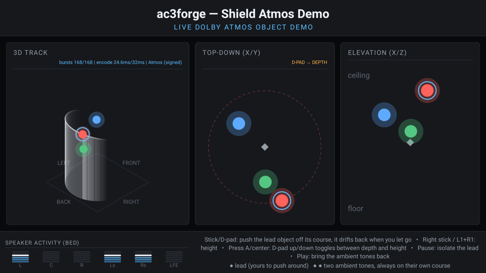
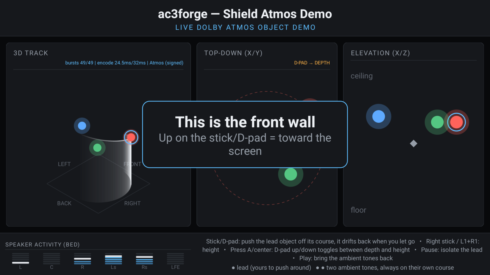
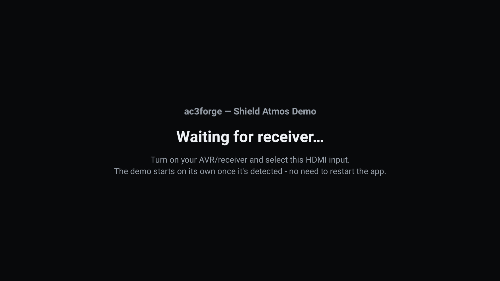

Android (NVIDIA Shield)¶
Android support is not ac3cli/ac3gui ported to a phone — it is a separate, small,
Shield-specific demo app, Shield Atmos Demo (apps/android/), that plays a real Atmos/JOC
stream out through the Shield's HDMI passthrough output to an AV receiver, with a controller or
remote moving one of a few objects around the room live. It exists to prove the encoder's object
audio audibly moves in 3D space on real consumer hardware, not to be a general-purpose encoding
tool. This page covers what is specific to Android; for the core library and the desktop
platforms, see Building from source and the other pages in this section.
Distribution is personal sideload only, via adb install — never the Play Store. That is a
deliberate choice, not a placeholder: the app can be built with object signing
enabled, and that build (which carries the key) must never leave the user's own device (see below).

Build and run¶
An Android SDK with NDK 26.1.10909125 and CMake 3.31.6 installed (local.properties →
sdk.dir), plus a Shield TV reachable over the network or USB:
cd apps/android
./gradlew assembleDebug --no-daemon
adb connect <shield-ip>:5555 # if not on USB
adb -s <shield-ip>:5555 install -r app/build/outputs/apk/debug/app-debug.apk
adb -s <shield-ip>:5555 shell am start -n com.ac3forge.shield/.MainActivity
Building and running below covers the SDK setup and signed builds.
What's reused, what's new¶
ac3::forge (src/forge/) — the codec, AtmosEncoder, IEC 61937 framing — is fully
platform-independent and is linked into the app unmodified, via a thin wrapper
CMakeLists.txt (apps/android/app/src/main/cpp/CMakeLists.txt) that add_subdirectory()s
the real repo root rather than duplicating its target definitions. ac3::audio (src/audio/)
gains a fifth backend, src/audio/src/backend/android/, alongside windows/alsa/
posix/macos, selected by CMake's own ANDROID variable (set by the NDK toolchain file, a peer check
to the existing WIN32/LINUX/APPLE blocks in src/audio/CMakeLists.txt) — no #ifdef
anywhere, per the project's
platform-tree convention.
Everything else — the Gradle app shell, the JNI bridge, the live encode loop, input handling, the
room visualization — is new and lives entirely under apps/android/, outside the CMake
project the desktop tools build from.
Toolchain¶
NDK r26.1.10909125, pinned explicitly in app/build.gradle.kts rather than left to "whichever
NDK Gradle resolves" — a build failure should mean something changed, not that a different NDK got
silently picked. CMake 3.31.6 (the closest available match in the SDK manager's package
repository to the root project's declared 3.28...4.3 range; there is no 3.28.x package for
Android). ANDROID_STL=c++_shared — the app's ac3::forge/ac3::audio are static libraries
linked into one shared object (ac3forge_jni.so), and a static STL would duplicate global state
(locale, iostream init) if anything else in the process ever pulled in libc++ too.
The r26 pin also reaches into the library itself: r26's bundled libc++ does not implement
<format>, so shared library code avoids it outright — src/forge/src/version.cpp builds its
version string by plain concatenation and cites this page for why.
minSdk = 26 (Oreo) is a hard floor, not a target: monitor.cpp depends on AAudio outright, which
does not exist below API 26, and there is no fallback path. Real Shield TV hardware (2017 model
onward) ships well above this. Only arm64-v8a is built — every real Shield TV is arm64, and
building the other ABIs would only slow local iteration for targets that can never run the app.
Audio backend: AAudio for monitor, JNI-bridged AudioTrack for passthrough¶
The original plan for this app was "native AAudio engine … using the existing IEC 61937 encapsulation" throughout. That premise turned out to be only half right, and is worth stating explicitly so it is not rediscovered:
AAudio has no compressed/bitstream passthrough support at all
The NDK's AAudio API is PCM-only — confirmed against Oboe's own maintainers' guidance, not
assumed. There is no AAudio call that hands a pre-framed IEC 61937 burst to an HDMI output and
asks the receiver to decode it as Dolby Digital/Digital Plus. Every real Android passthrough
implementation — Kodi's AESinkAUDIOTRACK.cpp, ExoPlayer's passthrough path — bypasses any
native/codec API entirely and writes encoded, already-wrapped bursts into a Java
android.media.AudioTrack, opened with a compressed encoding
(AudioFormat.ENCODING_E_AC3/ENCODING_IEC61937 — see below). This app does the same thing,
just with a modern zero-copy JNI bridge instead of Kodi's older heap-array wrap.
AMediaCodec (the NDK's native codec API) was considered and rejected for the same reason: it
is a decode/encode pipeline API, with no mode for "inject an already-encoded bitstream
verbatim onto passthrough output."
So the backend is genuinely split, unlike the other three:
monitor.cpp— real AAudio (AAudioStreamBuilder, PCM float), for local preview. This is exactly what AAudio is good at, and the only place in this backend that uses it.passthrough.cpp— a JNI shim implementingac3::audio::PassthroughSink.submit()hands each burst to a Kotlin-ownedAudioTrackvia a small round-robin pool of buffers wrapped once withenv->NewDirectByteBuffer(...)and promoted to aGlobalRefat startup — onememcpyinto a native buffer per burst, zero further copies, no per-frameNewDirectByteBuffer/GC churn. Kotlin'sPassthroughBridge.ktopens theAudioTrackwithENCODING_IEC61937(bursts arrive already framed —ENCODING_E_AC3would make Android re-wrap already-wrapped frames) and writes withWRITE_BLOCKING.capture.cpp— a no-op stub, mirroring theposixbackend's "no backend" shape. This app has no microphone/loopback feature to serve.audio_backend.cpp— reportscapture.available=falseunconditionally;passthroughandmonitoravailability come from a one-time capability probe at startup (AudioTrack.isDirectPlaybackSupported/isPcmSupported, called separately per format since AC-3 and E-AC-3 need different carrier rates — seecarrier_rate()inandroid_support.hpp), not from a static claim.
Real-time performance: RelWithDebInfo, and a real MDCT bug it uncovered¶
AGP's default for the debug build type is CMAKE_BUILD_TYPE=Debug (-O0). That is fine for
jni_entry.cpp's smoke tests but nowhere near real-time for live_cursor.cpp's actual per-frame
work (AtmosEncoder::encode_frame's MDCT/bit-allocation/JOC matrix, once every 32ms). Confirmed on
this Shield's Tegra X1: -O0 took ~425ms/frame, over 13x the budget — bursts arrived in huge
sparse gaps instead of a steady stream, which is exactly why the receiver's HDMI link stayed
flashing (video locked, audio never did). app/build.gradle.kts's debug build type now overrides
this to -DCMAKE_BUILD_TYPE=RelWithDebInfo, which keeps the APK debuggable (isDebuggable stays
on, no separate release signing needed to adb install) while actually optimizing the native side.
That override alone only bought back ~1.6x — nowhere near enough. Profiling with
Tracy (vcpkg's profiling manifest feature,
AC3FORGE_ENABLE_TRACY) traced the remaining gap to mdct_forward_core: it recomputed std::cos()
fresh, every iteration, inside an O(N²) loop, while the inverse transform right next to it already
used a precomputed table. Fixing the forward transform to do the same (ForwardCosTable in
src/forge/src/core/mdct.cpp) gave a further ~3.8x — this is a real library-level fix, verified
bit-exact against the full test suite, not an Android-specific workaround, and it benefits every
platform's Atmos encode path. With both fixes, the Shield holds an exact 32.0ms/frame cadence with
zero underruns. See Performance trend for the CI regression gate this
bug prompted (tests/performance/'s hard real-time gate plus the ac3bench trend tracker).
Objects: one interactive lead, two ambient, all on pre-planned orbits¶
live_cursor.cpp no longer holds a single object at a fixed point. Every object
(kInteractiveObjects + kAmbientObjects, currently 1 + 2) follows its own closed-form orbit —
trajectory_position(), a circle in the room's x/y plane centred on the room's exact middle
((0.5, 0.5), per oamd.hpp — also where the JOC/VBAP render implicitly assumes the listener
sits) with an independent, slower height bob — so every object's lap carries it both in front of
and behind the listening position, not confined to the front half of the room. Rate/phase/radius
differ per object (kTrajectory) so the three stay visually and audibly distinct.
The two ambient objects (a major third and a perfect fifth above the lead's A4, forming an A major
triad rather than an arbitrary tone set — kToneHz/kToneGain) are never touched by input —
they exist purely so the demo has more than one voice to show sound mixing/interaction between.
Only the lead is driven by Input below.
The lead's own voice is a bundled, seamlessly-looping sample, not a bare tone. A plain sine,
however correctly panned, gives the ear almost nothing to localize by — no onset transient for
azimuth (interaural time/level difference) cues, and no high-frequency content at all for the
pinna-filtered spectral cues elevation localization actually relies on; real-device testing
confirmed it as "muddy," not a discrete point source. assets/lead_voice_48k_mono_s16le.raw (a
layered rotor-thump/tail-rotor/engine-drone/blade-slap mix, generated offline via FFT-based
spectral synthesis — random phase per frequency bin at exact multiples of 1/duration, so the
inverse-FFT result is naturally periodic with no click at the loop seam) is loaded once at startup
through AAssetManager and looped sample-by-sample through the same tone_gain/distance-falloff/
soft-limiter chain every object's voice passes through. Missing the asset (an older build, or a
packaging issue) is not fatal: live_cursor.cpp falls back to a live-synthesized rotor-envelope
tone+noise mix instead of silence.
Distance-based loudness falloff. Without it, an object sounded exactly as loud swinging past the
listener at the room's centre as it did out at the far edge of its own orbit — correct panning
direction, but no sense of "coming toward me" versus "far away." An inverse-square-ish falloff
(distance_attenuation(), clamped with a floor so the far end of an orbit is quieter but never
silent — fully silent would fight the pause/mute isolation feature's own point) is applied as an
extra per-object, per-frame gain multiplier, computed from that frame's own placement.
Input: Shield Controller and basic remote, both¶
InputController.kt supports both devices this app is meant to run under, detected at the event
level rather than requiring the user to pick a mode. Every input source biases the lead object
off its own trajectory rather than moving it outright (NativeBridge.nativeDeflectSelectedObject
→ LiveCursorState::deflect_selected, clamped to a bounding box around the trajectory) — release
the input and LiveCursorState::advance() decays that bias back toward zero every encode frame
(kDeflectionDecayPerFrame, an exp(-t/1.5s) time constant) whether or not any more input arrives,
so the object drifts back onto its planned course on its own rather than needing an explicit
"input stopped" signal from Kotlin.
- Shield Controller (
SOURCE_JOYSTICK): both analog sticks, read inonGenericMotionEventwith a 0.15 deadzone, driving continuous deflection scaled by elapsed time via aChoreographer.FrameCallbackticker — held-stick input biases smoothly, not per-event-stepped.L1/R1add continuous height deflection independent of the D-pad's axis mode below. - D-pad (present on both the Controller and the basic remote): now held-continuous rather than
one-shot-per-press, unified into the same per-frame ticker as the analog sticks. Left/right
always biases x; up/down biases either y (further into/out of the room) or z (height),
depending on
axisMode— the remote's only way to reach height at all, since it has no second stick or shoulder buttons. - Axis-mode toggle: a short press of D-pad-center/Enter/A (
onKeyUp, only fires if the long-press branch below didn't already consume the press) flipsaxisModebetween X/Y and X/Z — deliberately immediate, not gated behind a hold, since real-device testing found a long-press-to- switch felt sluggish for something that needs switching back and forth rapidly while actively shaping a path. The top-down panel's header shows the current mode live (D-PAD → DEPTH/D-PAD → HEIGHT). - Snap back to course: a long press of the same key (
onKeyLongPress) instantly zeroes the selected object's deflection instead of waiting out the usual ~1.5s spring-back decay — a presenter's "and… reset" button. Replaced what used to be here (cycling the selected object, a no-op with only one interactive object).
Either way, input is coalesced to at most one JNI call per animation frame, never per raw input
event — the native side (live_cursor.cpp's LiveCursorState, mutex-protected) advances once per
encode frame, independent of how often Kotlin's ticker calls in.
Visualization¶
RoomView.kt is a plain View (not a SurfaceView — a handful of drawCircle/drawLine calls
per frame doesn't justify a SurfaceView's own render thread and SurfaceHolder lifecycle),
invalidated once per vsync via Choreographer.postFrameCallback. Three panels, all reading the same
NativeBridge.nativeGetObjectState() snapshot the encode loop just built for that frame, laid out
as rounded cards on a shared dark palette (Theme.kt — one file of colors/corner-radii/spacing so
this view, ChannelMeterView, and MainActivity's own chrome all read as one dashboard instead of
three separately-tuned screens):
- 3D track (left, square) — a tilted isometric ("2:1 video-game style") projection showing all
three room axes at once, plus the lead object's own trail (recent history behind it, faded;
planned course ahead of it, queried fresh from native each frame with no deflection, since future
input can't be known) with a drop-line from each trail point straight down to the floor, so height
reads as an unambiguous vertical offset rather than a diagonal easy to misjudge in an oblique
projection. Small
FRONT/BACK/LEFT/RIGHTcallouts sit just outside the floor plan's own edges — the one panel where the tilted angle alone doesn't make orientation obvious at a glance. Deliberately square, not a wide rectangle: the isometric projection's own natural bounding box is close to square, so a wider container mostly added dead margin rather than more visible content. Its header also carries a live encode-stats readout (bursts N/N | encode X.Xms/32ms | Atmos (signed), underruns only appended when actually nonzero) — real-time viability was a genuine, previously-hit problem on this SoC (see Real-time performance above), so showing the live number is worth more here than in most encode loops. - Top-down (X/Y) and elevation (X/Z) (right, side by side, not stacked — each gets the full
panel height this way instead of half of it) — the selected (lead) object ringed, a white diamond
marking the listener at the room's exact centre (both panels' (0.5, 0.5) — see
Objects above), and, on the
top-down panel, a faint dashed guide circle showing the lead's planned orbit so a viewer can see it
pushed off course and springing back rather than just a dot moving with no reference
(
kTrajectoryGuideRadius, duplicated fromlive_cursor.cpp'skTrajectory[0].radius— kept in sync by comment on both ends, not queried over JNI, since it's fixed at compile time on both). Each panel's own plotted room stays a true square, centred inside whatever rectangle its card actually is — both axes share the same normalized[0,1]scale, so a non-square plot would stretch one axis relative to the other and turn the (genuinely circular) guide into a misleading ellipse. - Speaker activity (bed) (bottom-left, alongside the control hints, not its own full-width row —
kept deliberately compact, since it's "interesting, but doesn't need to be prominent") — a
segmented, LED-style meter per real bed channel (
StreamStats::channel_levels, sourced fromAtmosEncoder::bed()— the literal audio a legacy 5.1 decoder hears, not a guess from the room- position math), with a bottom-to-top color ramp and a slowly-decaying peak-hold line, the same "catch the loudest recent moment" behavior a real hardware VU meter has.
Two transient overlays, sharing one TextView (mutually exclusive by construction) rather than
competing for the same screen space:
- First-launch orientation cue — "This is the front wall / Up on the stick/D-pad = toward the screen," shown once, the first time the receiver becomes ready (immediately at launch, or after some waiting — never while still waiting, which would just be confusing). Dismissed by the first real input, or auto-fades after 5s.
- Idle/attract prompt — "Press any button to take control," shown after 14s of no input (a demo left alone between visitors should invite the next person, not just sit there), dismissed the instant real input resumes.

HDMI receiver resilience: waiting, not crashing¶
Earlier hands-on use surfaced a real annoyance: if the AVR/receiver was off (or not yet HDMI-
negotiated) at launch, or got powered off mid-session, the app just sat there having silently done
nothing — the only fix was a force-restart, timed for whenever the receiver happened to be ready.
MainActivity.reconcileReceiverState() closes that gap: nativeStartLiveCursor() is no longer
called unconditionally in onCreate — it's gated on the receiver actually accepting E-AC3 right
now, re-evaluated on every AudioManager.ACTION_HDMI_AUDIO_PLUG broadcast (the system's own
"HDMI audio route capabilities changed" signal — receiver on/off, input switched, EDID
renegotiated) and on a slow (2.5s) periodic fallback, since that broadcast isn't guaranteed on every
real AVR power-off (some receivers don't change their reported EDID/HPD state on standby). A
persistent, full-screen "Waiting for receiver…" interstitial covers the dashboard until then, and
disappears on its own once streaming actually starts — no restart, ever.

AudioTrack.isDirectPlaybackSupported() blocks indefinitely against your own active track
Getting this right took two real bugs found on hardware, not just review — worth stating explicitly so neither is rediscovered the hard way again:
The capability probe hangs, not fails, if called while a direct AudioTrack on the same
route is already open or still opening. The obvious design — poll
isDirectPlaybackSupported() on a timer regardless of state, start/stop the loop based on the
result — froze the whole Activity on its own splash screen forever (main thread confirmed idle
via dumpsys, no exception, the encode loop itself kept streaming happily underneath) the
moment that poll landed while the loop's AudioTrack was live, almost certainly audio-policy-
manager lock contention rather than a bug in the probe itself. The same hang recurred calling
it again moments after nativeStartLiveCursor(), before that background thread's own
AudioTrack.Builder().build().play() had resolved — opening a track contends the same way an
already-playing one does. reconcileReceiverState() now probes capability only when
NativeBridge.nativeIsLiveCursorRunning() is false and no start attempt is still within a
3s grace period (START_ATTEMPT_GRACE_MS); detecting a receiver disappearing while already
streaming instead watches NativeBridge.nativeGetUnderrunCount() (the same
StreamStats::underruns counter submit() already tracked) for a rise, since a real AVR loss
shows up as failed AudioTrack.write() calls, and this needs no further call into
AudioTrack at all.
A view's default visibility has to match its state variable's own default, or the first
"no change" transition never applies either. The waiting overlay started GONE while
receiverReady started false (Kotlin's own default) — consistent-looking, but
setReceiverReady() only touches the view on an actual change (ready == receiverReady
short-circuits otherwise), so a receiver absent from the very first check (false -> false,
no change) left the overlay hidden and the full (empty, zeroed) dashboard showing instead —
confirmed on a real device screenshot. Fixed by defaulting the overlay to VISIBLE, matching
receiverReady's own false default.
Object signing¶
Object motion is audible even without this — but not as reconstructable objects
AtmosEncoder pans every object into the transmitted 5.1 bed regardless of signing status
(see atmos.hpp), so a plain, unsigned build of this app already produces audible movement
on any decoder — panned across the fixed channel layout. What signing adds is the object
audio: a real Dolby-licensed decoder gates JOC object decode on a keyed HMAC over the EMDF
protection field. The algorithm that produces that tag is in-tree; the key it needs is not.
The signer is ac3::signing (src/signing/) — committed, clean-room and dependency-free, the
same library ac3cli uses. Its full design (what's signed, why the algorithm is committable but
the key isn't) is in Object signing; this section covers only what
is specific to the app. The app's seam is shield_signing_hook.{hpp,cpp}, one committed
translation unit — no stub/enabled split and no CMake option any more, because there is no secret
in the code to keep out of a build. It signs per frame, right after encode_frame() and before
IEC 61937 wrapping, since it streams live rather than writing a file.
The key is a bundled asset, written from a CI secret. The desktop CLI takes a key by path or
env var, but this app signs on-device, so the key has to travel in the APK as an asset,
app/src/main/assets/signing.key. That file is gitignored and is materialized at build time —
CI writes the base64 ATMOS_SIGNING_KEY secret verbatim into it (.github/workflows/_build.yml),
or you drop one in by hand for a local signed build. init_signing() loads it once through the same
AAssetManager the lead-voice asset uses and decodes it (base64 or raw) via the same
ac3::signing::decode_signing_key() the CLI applies.
Unsigned builds omit the object container entirely, not just leave it unsigned. An unsigned
but present EMDF container is not a safe degraded mode — per AtmosConfig::emit_object_metadata's
own comment, a decoder that validates the emdf_protection field treats the container's sync word
as a commitment to object decoding and refuses the whole stream if it doesn't validate, rather than
falling back to plain 5.1. shield_signing_hook.hpp's signing_available() (true only once a key
asset actually loaded) lets live_cursor.cpp decide this once at startup: emit_object_metadata
is set to signing_available(), so a keyless build runs the same bed51 mode ac3cli mode bed51
exposes — no container at all, always safe, on every receiver — while only a build carrying the key
ever emits and signs one.
To build a signed APK on your own machine, drop your own signing.key (base64 or raw bytes) into
app/src/main/assets/ — gitignored, so git status never shows it — and build as normal:
A signed APK contains the key
Because the app signs on-device, the key ships inside any signed-build APK as that asset —
anyone with the APK can extract it. A signed APK is therefore as sensitive as the key itself:
sideload it to your own Shield via adb install and never distribute it. A build without the
asset is the safe unsigned app and has nothing to revert.
Building and running¶
cd apps/android
./gradlew assembleDebug --no-daemon
adb connect <shield-ip>:5555 # if not on USB
adb -s <shield-ip>:5555 install -r app/build/outputs/apk/debug/app-debug.apk
adb -s <shield-ip>:5555 shell am start -n com.ac3forge.shield/.MainActivity
local.properties needs sdk.dir pointing at an Android SDK with NDK 26.1.10909125 and CMake
3.31.6 installed (via Android Studio's SDK Manager, or sdkmanager --install). For a local signed
build, also drop a signing.key asset into app/src/main/assets/ as described in
Object signing.
Release / CI¶
The app builds alongside the desktop packages rather than only ever being hand-built locally:
.github/workflows/_build.yml's build-android job builds the debug variant on every push
(no Android SDK/NDK setup beyond what ubuntu-latest ships plus an explicit pin of the exact NDK
version, 26.1.10909125, the same "don't trust whatever the image happens to cache" reasoning
every other toolchain step in that workflow already follows) — a continuous smoke test proving the
Gradle/CMake/NDK toolchain and every native source file still build, the same role windows-msvc's
always-on packaging step plays for the desktop legs. Object signing is gated purely on the
ATMOS_SIGNING_KEY secret, not on whether this is a release. Both ci.yml and release.yml
forward that secret, so if it is set, every Shield build — the always-on debug APK included —
bundles the key asset and signs; with no secret the step is skipped and the build is the unsigned
bed51 app.
For an actual release (release.yml, do_package: true), the same job also builds and stages the
release variant (CMAKE_BUILD_TYPE=Release) as ac3forge-shield-<version>.apk. A separate,
independent signature — APK code-signing — also applies to it: the APK is signed with a real
release keystore when ANDROID_KEYSTORE_BASE64 and its companion secrets are provisioned (see
build.gradle.kts's releaseSigningAvailable), and falls back to the debug keystore otherwise —
this app is sideload-only, so the release key matters only for update-signature continuity, not a
store requirement. (Object signing above is unrelated to this APK keystore; a signed-objects APK
carries the key and must not be distributed — see Object signing.) The
APK is uploaded as a packages-android artifact and folded into the
GitHub Release alongside the Windows/Linux/macOS packages (checksummed, GPG-signed, and
build-provenance-attested exactly like every other package — release.yml's artifact globs all
include *.apk).
Promoted, not experimental. This job used to run continue-on-error: true, before it had ever
actually run on GitHub's hosted runners. It has since gone green three consecutive times on real
hosted runners (feature/shield-atmos-platform's own PR history) — comfortably past the bar
macos-llvm was promoted at — so that line is gone: a build-android failure now blocks like
every other required leg.
What has and has not been verified¶
Verified on real hardware
Installed, launched, and run repeatedly on the developer's own Shield (Tegra X1 SoC) connected
to a real AV receiver over HDMI, across every round of feature work described on this page, not
just the initial one. The encode loop holds exact real-time cadence (32.0ms/frame, zero
underruns) for extended runs. Both Shield Controller analog input and D-pad/remote-style input
(the latter verified via adb shell input keyevent injection) move the correct object; the
pre-planned orbit trajectory, input-driven deflection with spring-back, the snap-back long
press, the axis-mode toggle, and the two ambient objects have all been exercised live and the
room visualization tracks the encode loop's own state throughout.
The object-signed build's object audio has been confirmed reconstructable on the real receiver — not just the always-audible panned bed. With the delta-bit-allocation fix described in the signer's own history (an unrelated bit-tracking bug that had been silently corrupting a large fraction of signed frames) and the real receiver powered on and HDMI-linked, the receiver's own front-panel display read Atmos/DD+, 48kHz in, 5.0.4 out, and the object's motion was audible. This resolves what had been an open question in Two honest limitations for this specific encoder/signer pair, though the general caveat there still applies to any other clean-room encoder without a matching signing key.
The bundled lead-voice asset loads and streams cleanly (loaded lead voice asset: 192000
samples (4.00s) in logcat, zero underruns through extended runs), and the dashboard redesign —
the 3D/top-down/elevation three-panel layout, the speaker-activity meter, the first-launch
orientation cue, and the idle/attract prompt — has been confirmed rendering correctly via real
device screenshots (adb shell screencap), not just compiled.
HDMI receiver resilience (see that section above) has been verified in full on real hardware, including the two scenarios that can only be tested by physically power-cycling the AVR — turning the receiver on after the app has already launched waiting, and losing the receiver mid-session — both confirmed working without a force-restart. The happy path (receiver already on at launch) and the waiting-screen UI itself were verified directly; the two power-cycle scenarios were confirmed by the developer on the physical device.
Both the release (unsigned) and local-signed debug builds install and launch without crashing;
the release build's logcat confirms object container: bed51 (omitted, unsigned build) — the
safe public default actually takes effect, not just compiles. build-android has itself now run
green three consecutive times on GitHub's hosted runners — see Release / CI above.
Not yet verified
tests/backend/android/ covers only the device-free logic (burst sizing, carrier rate,
render-device construction), built and run on the normal desktop-hosted CTest suite — there is
no automated on-device or instrumented test for anything in this section; every claim above is
manual verification on one specific Shield + receiver pair, not a repeatable check. Other Android
TV hardware (a different SoC, a different receiver's own EDID/HDMI behavior) is untested. This
is also the only platform page in the project where anything has actually run on real target
hardware with a real receiver attached — a platform's CI legs passing (Linux's alsa backend
included) is a materially different claim than this page's "installed and run on a real device"
one, and should not be read as implying the latter.